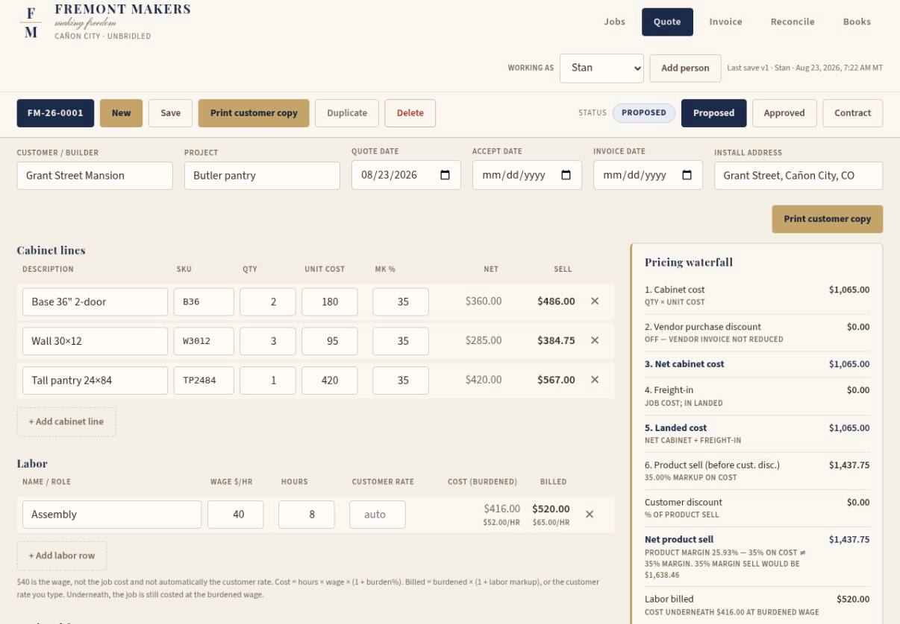

A Quick Note
From Stan Bullis · August 23, 2026
To Justin Farr, Tim Woodring, and Jonathan Wield
Good one, fellas.
I spent the morning downloading Grok Bot and onboarding it, just as a comparison between MC and Grok Bot. Overall, Justin, you should be proud of yourself. You built almost an identical platform to what Elon just launched.
The design was so similar that Cindy asked if it was already available in public, thinking Elon stole Justin's idea. Pretty funny. You should give yourself a lot of credit for thinking this through.
On the interface: MC is much more fun to work with. More personality. The work sounds more like us, and it lands a little more on target.
The hurdle with MC is the little bugs. Accuracy. History. It still takes some manipulation.
The upload into Grok Bot was really, really simple for people who know what they're doing. You request the team members you want. It goes out and finds them. Then it gives you a display board of your team. I keep asking MC for the team. This makes it look like you already have one. I found that neat.
Grok Bot also runs things more chronologically. You can visually see it handing work to CPAs and legal people, and it gives you advice along the way. You can actually see who's working on what, and that there are people working on things. That's a neat feature.
It is not as fun. Very institutional. Not much personality. Clearly just jamming through work.
I've been downloading some work I did with MC and putting it into Grok Bot to see what it will do with it. The Fremont Makers quote builder was interesting to watch. I haven't seen the final result yet, but it gave a lot of feedback along the way about what was wrong and what was right. It acted a little like a business consultant.
One example: you didn't mark up your labor, so there's no burden rate on it. That's a loss leader. Or, your tax calculation is incorrect. Or, do you need more functionality in the tax calculator?
This is what Grok Bot came back with on the Fremont Makers quote system.

Generally speaking, it looks more like a piece of software. Of course it was building off of something we created. I haven't gone through the whole thing yet, but it's pretty neat. Let's see where we go.
It would be interesting, if we create our own CRM or ERP, to use one system for design and the other for programming. Very interesting. Here you go.
It built my teams really easily. I just told it what I wanted and it went and found them.
Jonathan, I think it would be really interesting to have you build a quote builder.
Last quick note: I haven't seen all of its design work. If the design work is not good, that's kind of an I'm out. What I produce needs to be attractive and functional, both.
Is the delay in MC now a function of us having Grok 4.6 on the back end?
I'm imagining a world where I have two chiefs of staff. One that is Grok Bot. One that is MC. I may divide them with specific tasks. I may take what one builds and push it through the other, and see if there's a performance improvement. Toggle them back and forth.
I wonder if we should pin MC back to whatever our highest Anthropic Claude version is, so we've got one powered primarily through Claude and one powered primarily through Grok. Two systems working against each other. The benefit of the competition between Anthropic and Grok.
Is there such a thing as building an agent of the agents? An ultra chief of staff you could give orders to, that would leverage the results of both Grok Bot and MC.
Last note on the comparison. This is the landscape as I see it. Stream of consciousness from the kitchen table. Not well thought out.
I think this launch of Grok Bot will create a massive AI inertia. I actually think it could be the entrance to the singularity. Millions of people will be turbocharged by it. Millions will be left behind. That is going to create a lot of disparity in power.
I paid for the premium subscription. $259 a month. Justin, that's probably the price-barrier entry if we decided to do this as the Burger King to McDonald's. BeUnbridled.ai would need to be cheaper, and we would need to offer something different than Grok. I think few people will buy it at $249. Those that do will be super powerful.
I think you'll see an explosion of software being created. It's like when everybody got PCs versus mainframe. An explosion of creativity. An explosion of development. Someone said the other day it could wind up being a Tower of Babel for software.
Regardless, this tool is accessible to many. Many will jump on it. Many will not. There will be a great disparity between the creatives and the not creatives. That's something to pay attention to.
I do think it's going to accelerate us. We still don't know what the outcome is.
Just fun musings. I thought you would want to know I'm playing around.
Bless you guys.
Stan
Stan Bullis
Founder, Unbridled Companies